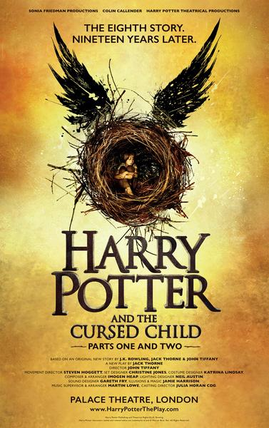
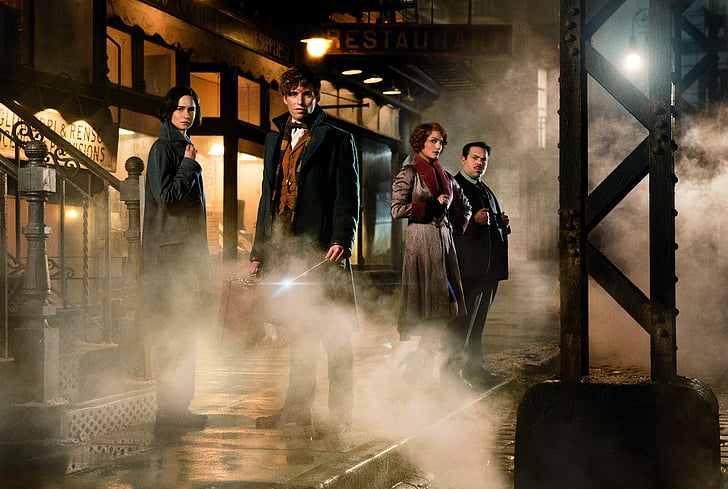
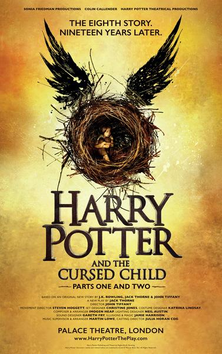
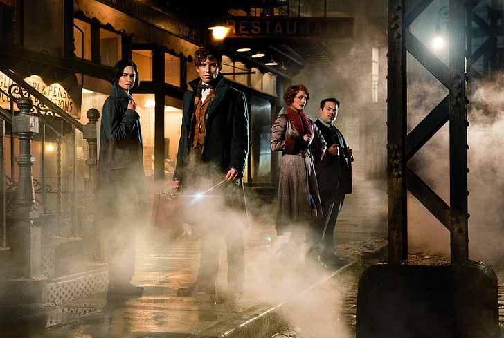

Harry Potter and the Cursed Child is a two-part play written by Jack Thorne, based on an original story by Thorne, J. K. Rowling, and John Tiffany. It serves as the eighth story in the Harry Potter series, taking place nineteen years after the events of Harry Potter and the Deathly Hallows.
Jack Thorne is the primary author of Harry Potter and the Cursed Child. He is a renowned English playwright, screenwriter, and novelist. Known for his innovative and thought-provoking works, Thorne has won numerous awards, including the Olivier Award and the South Bank Sky Arts Award. His other notable works include the plays The Equator and The Curious Incident of the Dog in the Night-Time. While J. K. Rowling, the creator of the Harry Potter series, was involved in the story development, Thorne's writing skills and experience in theater were instrumental in bringing the play to life.
 



| Book Title | Year of Publication | Aurthor |
|---|---|---|
| Harry Potter and the Philosopher's Stone | 1997 | J.K Rowling |
| Harry Potter and the Chamber of Secrets | 1998 | |
| Harry Potter and the Prisoner of Azkaban | 1999 | |
| Harry Potter and the Goblet of Fire | 2000 | |
| Harry Potter and the Order of the the Half-Blood Prince | 2005 | |
| Harry Potter and the Deathly Hallow | 2007 |
| Book Title | Major Awards |
|---|---|
| Harry Potter and the Philosopher's Stone | Nestlé Smarties Prize Gold Award, Booksellers Association Author of the Year |
| Harry Potter and the Chamber of Secrets | Nestlé Smarties Prize Gold Award, Booksellers Association Author of the Year |
| Harry Potter and the Prisoner of Azkaban | Nestlé Smarties Prize Gold Award, Booksellers Association Author of the Year, Carnegie Medal Shortlist |
| Harry Potter and the Goblet of Fire | Hugo Award, British Book Awards Adult Prize, Locus Award for Best Young Adult Novel |
| Harry Potter and the Order of the Phoenix | British Book Awards Children's Book of the Year |
| Harry Potter and the Half-Blood Prince | British Book Awards Adult Prize, National Book Critics Circle Award for Young People's Literature |
| Harry Potter and the Deathly Hallows | British Book Awards Children's Book of the Year |